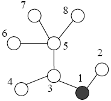
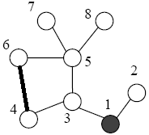

Một thành phố có N ngôi làng được đánh số từ 1 đến N. Có N – 1 con đường nối giữa các ngôi làng. Mỗi con đường nối 2 ngôi làng, và luôn có đường đi từ 2 ngôi làng bất kỳ bằng cách sử dụng các con đường đó. Độ dài của mỗi ngôi làng là 1 đơn vị thời gian.
Để đảm bảo an toàn cho mọi người trong thành phố, hàng ngày cảnh sát thành phố phải đi tuần tra dọc trên các con đường. Đồn cảnh sát được đặt tại làng 1, vì vậy hành trình của cảnh sát phải bắt đầu từ làng 1 và quay trở về làng 1 khi kết thúc một ngày.
Ví dụ dưới đây cho ta kết quả đi tuần mỗi ngày của cảnh sát là mất 14 đơn vị thời gian.

Để tiết kiệm thời gian đi tuần của cảnh sát, thành phố quyết định xây dựng thêm 1 đường tắt kết nối giữa 2 ngôi làng.

Hình trên là ví dụ về việc xây thêm đường tắt. Trong ví dụ, một đường tắt được xây dựng nối ngôi làng thứ 4 với ngôi làng thứ 6 và tổng đơn vị thời gian đi tuần tra 1 ngày là 12.
Viết chương trình tìm cách xây dựng thêm 1 đường tắt và số cách xây dựng con đường tắt đó sao cho tổng đơn vị thời gian đi tuần trong 1 ngày của cảnh sát là ít nhất có thể.
Dữ liệu nhập:
- Dòng đầu tiên chứa số nguyên N (2 ≤ N ≤ 105).
- N – 1 dòng tiếp theo, mỗi dòng chứa hai số nguyên A, B (1 ≤ A, B ≤ N), tức là có đường nối trực tiếp từ ngôi làng A tới ngôi làng B.
Dữ liệu xuất:
- Hai số nguyên dương là tổng chi phí thời gian ít nhất và số cách xây dựng 1 đường tắt.